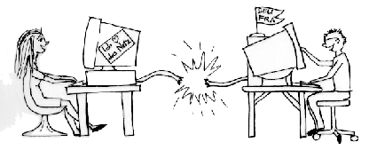

DEU-FRA

Französisch-deutsches
Teilnetz im
International E-Mail
Tandem Network
[en
français]
Wenn Sie Deutsch als
Erstsprache sprechen und Französisch lernen wollen oder
umgekehrt, dann ist dies das richtige Teilnetz für Sie.
Wie
Sie mitmachen können
- Melden Sie sich
zuerst bei der zentralen Partnervermittlung
an. Schreiben Sie an die Adresse
tandem@slf.ruhr-uni-bochum.de
folgende Nachricht: "DEU-FRA. Meine Erstsprache ist
deutsch. Ich lerne französisch. Mein Name ist
....". Sobald Sie eine Partnerin oder einen Partner
haben, nehmen Sie mit ihr bzw. ihm Kontakt auf.
- Melden Sie sich
dann für das Forum DEU-FRA an, wo Sie
mit vielen anderen auf deutsch und auf französisch über
alles Mögliche diskutieren können: Schreiben Sie an die
Adresse
majordomo@tandem.uni-trier.de
folgende Nachricht (ohne Anführungsstriche):
"SUBSCRIBE DEU-FRA".
- Wenn Ihre
Anmeldung akzeptiert ist, stellen Sie sich im
Forum kurz vor: Schreiben Sie an die Adresse des
Forums
DEU-FRA@tandem.uni-trier.de
einen kurzen Text über sich selbst – möglichst in
beiden Sprachen.
Über das Forum
DEU-FRA und
die Tandemvermittlung erhalten Sie weitere Tips für die Arbeit mit Ihrem Partner und
im Forum.
Teilnetzkoordinatoren
Veronika Bayer,
Département des Langues Vivantes, ENST Paris (F) – E-Mail: bayer@cal.enst.fr
Karin Kleppin,
Seminar für Sprachlehrforschung, Ruhr-Universität Bochum
D-44780 Bochum – E-Mail: KleppinK@slf.ruhr-uni-bochum.de
Beate Helbig,
Seminar für Sprachlehrforschung, Ruhr-Universität Bochum
D-44780 Bochum – E-Mail: helbigb@slf.ruhr-uni-bochum.de
© 1995, 1996
Brammerts